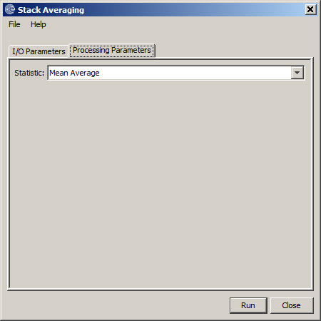

Stack Averaging Operator
Stack Averaging operator computes
statistics for the corresponding bands in the given stack product. For
example the mean of all "i_VV_" bands and mean of all "q_VV_" bands. .
The statistics include mean, minimum, maximum, standard deviation and
coefficient of variation.
Input and Output
- The
input to this operator is a stack product.
- The output of this operator is the user selected statistic for all bands.
Parameters Used
The following processing parameter is required for this operator (see Figure
1):
- Statistic: The user selected statistic which could be mean, minimum, maximum, standard deviation and coefficient of variation.

Figure 1. Stack Averaging operator
UI